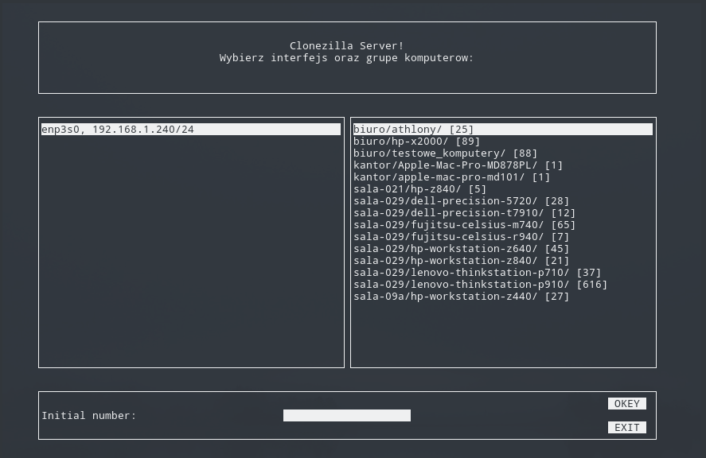

Instalacja
Szczegółowa instalacja została przedstawiona w sekcji Instalacja. Przeprowadzenie instalacji jest wymagane dla dalszej konfiguracji drblms.
Pierwsze uruchomienie
Podczas pierwszego uruchomienia pakiet drblms utworzy drzewo plików konfiguracyjnych (domyślnie w /etc/drblms/) korzystając z szablonów znajdujących się w katalogu pakietu (drblms/config/config.json). Domyślnie utworzony zostanie dodatkowo pusty folder /etc/drblms/macbank przeznaczony do uzupełniania adresami MAC.
Dodawanie nowych adresów MAC
Uzupełnianie drzewa zostało szczegółowo wytłumaczone w sekcji Tworzenie i uzupełnianie drzewa katalogów macbank.
Opis layoutu

drblms posiada layout zbudowany dzięki modułowi blessed.
Lewa część pokazuję liste dostępnych interfejsów sieciowych, ich nazwy oraz przypisaną adresacje IP. Aby interfejs został wykryty i ukazany na liście, musi zostać wcześniej wykryty przez drblpush (musi znajdować się sekcja w pliku drblpush.conf odpowiadająca interfejsowi) oraz rozpoznany przez Node.js (aby interfejs został wykryty, muszą zostać przez niego przesłane i odebrane jakiekolwiek dane). Informacje dla tej części dostarcza moduł module:interfaceHarvester.
Prawa część ukazuje liste dostępnych grup urządzeń wraz z liczbą dostępnych adresów. Uzupełnianie adresów jest szczegółowo opisane w sekcji Tworzenie i uzupełnianie drzewa katalogów macbank.
Dolna część zawiera przyciski funkcyjne (OKEY oraz EXIT) oraz pole zawierający wartość ostatniego oktetu adresu IP, który jest zarezerwowany do pierwszego urządzenia z grupy.
Dla adresacji 10.0.0.0/8, 10 maszyn i początkowym adresie 250 adresacja urządzeń wygląda następująco: 10.0.0.250, 10.0.0.251, 10.0.0.252, 10.0.0.253, 10.0.0.254, 10.0.0.255, 10.0.1.0, 10.0.1.1, 10.0.1.2, 10.0.1.3.